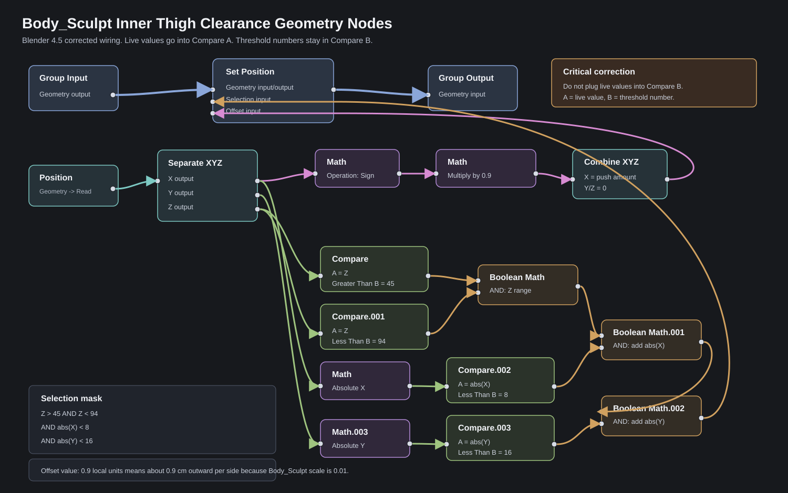

Body_Sculpt Inner Thigh Geometry Nodes
Corrected Blender 4.5 wiring reference for Body_Sculpt, whose object scale is 0.01. Use local-coordinate thresholds: Z 45-94, abs(X) under 8, abs(Y) under 16, and offset 0.9 for about 0.9 cm per side. The important fixes are:
live coordinate/math values go into Compare A, numeric
thresholds stay in Compare B, and the final Boolean AND
output goes to Set Position.Selection.
